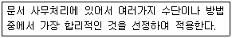
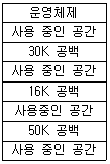

사무자동화산업기사 (2014-03-02 기출문제)
1과목: 사무자동화 시스템
1. 사무자동화의 4대 기본 요소로 올바르게 짝지어진 것은?
- 사무실, 장비, 정보화, 통신
- 철학, 장비, 시스템, 인간
- 인간, 자료, 자동화, 시스템
- 경영, 조직, 시스템, 기계
(정답률: 86%)

2. 사용자가 보조기억장치의 전체용량에 해당하는 기억장소를 컴퓨터가 가지고 있는 것으로 생각하고 주기억장소의 용량보다 큰 프로그램을 작성할 수 있도록 하는 개념의 메모리는?
- Cache memory
- Virtual memory
- Associate memory
- Buffer memory
(정답률: 61%)
3. 통신판매중개자가 자신의 정보처리시스템을 통하여 처리한 기록 중 표시ㆍ광고에 관한 기록의 보존 기준은?
- 6개월
- 1년
- 3년
- 5년
(정답률: 51%)
4. 파일을 구성하는 기억 영역의 최소 단위로 특정한 한 종류의 테이터를 포함한 것은?
- 단어(Word)
- 바이트(Byte)
- 필드(Field)
- 파일(File)
(정답률: 50%)
5. 집중처리 시스템의 과도한 처리집중에 따른 문제점이 아닌 것은?
- 통신관리상의 문제점
- 운용상의 문제점
- 시스템 사용상의 문제점
- 사용자 응용 업무 개발시 문제점
(정답률: 38%)
6. USB에 대한 설명으로 틀린 것은?
- 컴퓨터와 주변기기를 연결하는데 쓰이는 입출력 표준이다.
- 주로 캠코더에 탑재되어 DV 규격으로 사용되고 있다.
- 기존의 다양한 방식의 연결을 대체하기 위해 만들었다.
- 충전용도로도 많이 사용되고 있다.
(정답률: 84%)
7. 사무자동화 추진의 선결 과제로 적합하지 않은 것은?
- 추진 목표의 설정
- 한계선의 설정
- 벤치마킹 실시
- 전사적 캠페인의 실시
(정답률: 62%)
8. 등선속도(CLV)방식의 특징으로 옳은 것은?
- 디스크 저장 공간이 비효율적으로 사용된다.
- 디스크 평판이 일정한 속도로 회전한다.
- 회전 구동장치가 간단하다.
- 저장 용량의 손실이 없다.
(정답률: 54%)
9. OA의 외적 환경분석의 구체적인 사항에 포함되지 않은 것은?
- 컴퓨터 및 사무자동화 기기 생산업체
- 공동서비스 업체
- 전문 용역업체
- 사무요원의 의식구조
(정답률: 64%)
10. 다음 중 MPEG의 설명으로 옳지 않은 것은?
- 멀티미디어와 하이퍼미디어의 저장 방식과 다중화 방식등을 표준화 하는 표준
- 동영상 압축에 대한 ISO 국제 표준안
- 손실압축 기법에 포함
- MPEG7은 동영상 데이터 검색과 전자상거래 등에 적합하도록 개발된 차세대 동영상 압축 재생기술
(정답률: 34%)
11. 타이머나 컴퓨터 조작의 콘솔 조작에 의한 인터럽트는?
- 기계검사 인터럽트(Machine Check Interrupt)
- 오퍼레이터 인터럽트(Operator Interrupt)
- 슈퍼바이저 콜 인터럽트(Supervisor Call Interrupt)
- 외부 인터럽트(External Interrupt)
(정답률: 68%)
12. 엑셀 등 스프레드시트에서 "범위1"영역에서 "찾을 값"과 같은 데이터를 찾은 후 "범위 2"에서 찾은 값과 같은 행에 있는 데이터를 반환하는 함수는?
- OFFSET 함수
- INDIRECT 함수
- LOOKUP 함수
- MATCH 함수
(정답률: 76%)
13. 데이터베이스의 구조에 대한 정의와 이에 대한 제약 조건 등을 기술하는 것을 무엇이라 하는가?
- 스키마
- 데이터베이스 언어
- 도메인
- 엔티티
(정답률: 84%)
14. 사무자동화 접근방법 중 "전사적 접근방식"의 장점에 해당하는 것은?
- 대상 업무의 신속, 정확화
- 기기의 두려움이나 부담감이 없음
- 시행착오 감소, 협동심 고취
- 시스템 도입 비용의 절감
(정답률: 37%)
15. 데이터웨어하우징에서 수집되고 분석된 자료를 사용자에게 제공하기 위해 분류 및 가공되는 요소기술은?
- 데이터 추출
- 데이터 저장
- 데이터 마이닝
- 데이터 액세스
(정답률: 82%)
16. 사무자동화 발전에 영향을 준 경제, 사회적 요인 중 설명이 적합하지 않은 것은?
- 최대의 이익을 추구하기 위하여 정보의 최대 활용이 요구되는 경제 환경의 변화
- 생산부문의 합리와, 자동화에 부응하여 오피스에 대한 관심의 증가로 인한 기업의 구조적 변화
- 소품종 대량생산으로 변화되고 오피스도 처리능력이 소수정밀화가 요구되는 사회풍토의 변화
- 과학력화, 고령화로 인한 인구수, 연령분포, 교육년수의 변화
(정답률: 75%)
17. 분산 데이터베이스 시스템에 대한 설명으로 옳지 않은 것은?
- 여러 컴퓨터로 인한 동시 처리로 처리의 효율성을 높일수 있다.
- 사용자가 물리적으로 저장되어 있는 곳을 알고 있어야 한다.
- 한 컴퓨터의 장애는 다른 컴퓨터에 큰 영향을 주지 않는다.
- 작업 부하에 따라 분산 컴퓨터의 작업량을 조절할 수 있다.
(정답률: 75%)
18. 캐시(cache) 기억장치의 설명으로 옳지 않은 것은?
- 저용량 고속의 반도체 기억장치이다.
- 기억용량이 커질수록 액세스 시간이 짧아진다.
- CPU는 캐시에서 수행한 명령과 자료를 얻는다.
- Program의 수행시간을 단축하는데 사용한다.
(정답률: 60%)
19. GPU(Graphic Processing Unit)에 대한 설명으로 옳지 않은 것은?
- 컴퓨터그래픽을 전문으로 담당하는 부품이다.
- 컴퓨터 영상 정보처리, 가속화, 신호 전환, 화면 출력 등을 담당한다.
- 3D 그래픽을 주로 담당하며, 이와 관련된 연산을 수행 할 때 주로 출력장치의 부담을 줄일 수 있다
- NVIDIA에서 처음 도입하였다.
(정답률: 65%)
20. 윈도즈 응용 프로그램에서 다양한 데이터베이스 관리 시스템(DBMS)에 접근하여 사용할 수 있도록 개발한 표준 개방형 응용 프로그램 인터페이스 규격은?
- SQL
- ACCESS
- API
- ODBC
(정답률: 71%)
2과목: 사무경영관리 개론
21. 정보통신망에서 개인정보의 안전성 확보에 필요한 기술적 조치에 해당하는 것은?
- 개인정보의 안전한 취급을 위한 내부관리계획의 수립 및 시행
- 개인정보의 안전한 보관을 위한 잠금장치 등 물리적 접근 방지 조치
- 침해사고방지를 위한 보안 프로그램의 설치 및 운영
- 개인정보보호를 위한 정기적인 자체 감사 실시
(정답률: 71%)
22. 공고문서의 효력 발생 시기를 구체적으로 밝히고 있지 않은 경우, 효력 발생 시기는?
- 문서가 접수된 때
- 문서가 발신된 때
- 고시 또는 공고 등이 있는 날로부터
- 고시 또는 공고 등이 있는 날로부터 5일이 경과한 때
(정답률: 74%)
23. 부하, 상사, 교관이 하나의 문제를 놓고 함께 해결하여 사무간소화를 추진해 가는 방법은?
- 자발적 접근법
- 문제해결식 접근법
- 공식프로그램법
- 순수개발식 접근법
(정답률: 83%)
24. 다음은 문서관리의 기본원칙 중 무엇에 관한 것인가?

- 간소화
- 전문화
- 자동화
- 표준화
(정답률: 80%)
25. 다음 중 사무를 위한 작업이 아닌 것은?
- 기록(writing)
- 계산(computing)
- 접근(access)
- 분류 및 정리(classifying and filing)
(정답률: 64%)
26. "사무는 경영의 정보를 행동으로 결합시키는 과정(process)" 이라고 주장한 사람은?
- 달링톤
- 포레스트
- 리틀필드
- 오도넬
(정답률: 62%)
27. 사무실 배치의 원칙에 관한 내용이 아닌 것은?
- 기기, 설비 등의 적절한 배치
- 구성원이 필요로 하는 기기, 설비 등의 크기와 위치 설정
- 기기의 유지보수(Maintenance)에 관한 계약
- 공간의 유기적인 활용 및 쾌적한 환경을 위한 활동
(정답률: 73%)
28. 기안문 구성비 본문의 내용이 표의 중간까지만 작성된 경우 어디에 "이하 빈칸"을 표시하여야 하는가?
- 마지막으로 작성된 장의 맨 하단
- 마지막으로 작성된 장의 아래 여백
- 마지막으로 작성된 칸
- 마지막으로 작성된 칸의 다음 칸
(정답률: 75%)
29. 일반적인 비공개 기록물의 공개원칙 기준으로 옳은 것은?
- 생산연도 발생후 10년이 경과하면 공개
- 생산연도 발생후 30년이 경과하면 공개
- 생산연도 종료 후 10년이 경과하면 공개
- 생산연도 종료 후 30년이 경과하면 공개
(정답률: 60%)
30. 배타적발행권은 그 설정행위에 특약이 없는 때에는 몇 년간 존속하여야 하는가?
- 맨 처음 발행등을 한 날로부터 1년간 존속
- 맨 처음 발행등을 한 날로부터 3년간 존속
- 맨 마지막 발행등을 한 날로부터 1년간 존속
- 맨 마지막 발행등을 한 날로부터 3년간 존속
(정답률: 37%)
31. 사무실내 소음을 막기 위한 방법으로 옳지 않은 것은?
- 소음이 많이 발생하는 사무기기는 칸막이를 설치하여 소음을 줄인다.
- 사무실내 바닥은 탄력성이 있는 재료를 사용하여 소음을 줄인다.
- 천장이나 벽 등에 방음재, 흡음재를 사용하여 소음을 줄인다.
- 기계를 놓은 책상 바로 밑에 음의 공명작용을 막기 위하여 서랍을 설치한다.
(정답률: 68%)
32. 사무관리의 기능에 대한 설명으로 옳은 것은?
- 계획화는 경영활동을 합리적으로 수행하기 위하여 활동 목표 및 실시과정에 가장 유리하게 도달할 수 있도록 사후에 결정짓는 것을 말한다.
- 조직화는 직무가 능률적으로 달성될 수 있도록 인적자원의 적재적소 배치, 물적 요소의 명확화, 그리고 이들을 유기적으로 결합하여 직무가 능률적으로 달성될 수 있도록 하는 관리 활동이다.
- 동기화는 경영조직의 횡적조직과 계층별 조직에 있어서 업무수행에 필요한 이해나 견해가 대립된 제 활동과 노력을 결합하여 동일화해서 조화를 기하는 기능이다.
- 조정화는 기준과 지시에 따라 설행되고 있는가를 확인 대조하면서 오류를 범하지 않도록 사전에 방지하는 기능이다.
(정답률: 52%)
33. 산업안전보건기준에 관한 규칙상 안전하게 통행할 수 있는 통로의 조명 기준은?
- 75럭스 이상
- 100럭스 이상
- 300럭스 이상
- 500럭스 이상
(정답률: 56%)
34. 사무 통제를 하기 위하여 작업량, 시간, 평가 등을 나타내는 간단한 부호를 사용하여 절차계획과 일정계획의 내용을 나타내는 관리 도구는?
- 절차도표(procedure chart)
- 프로그램평가개선기법(PERT)
- 티클러 시스템(tickler system)
- 간트 차트(gantt chart)
(정답률: 70%)
35. 자료관리에 의한 기대효과로 볼 수 없는 것은?
- 자료의 자연적 증가는 통제할 수 없지만 필요한 정보를 효과적으로 획득할 수 있다.
- 자료의 이동 과정을 신속하게 파악할 수 있다.
- 많은 양의 자료에서 필요한 자료를 계획적으로 수집, 분류할 수 있다.
- 자료 처리에 따른 경비를 절약할 수 있다.
(정답률: 47%)
36. 조직의 운영에 필요한 정보를 효율적, 합리적으로 생산, 유통 활용하기 위한 것을 무엇이라 하는가?
- 사무조직
- 사무관리
- 사무통제
- 사무계획
(정답률: 62%)
37. 사무작업의 효율화를 기하기 위해서는 절차, 서식, 작업 시간을 단축하거나 간소화해야 하는데, 다음 사항 중 사무 간소화에 해당하지 않는 것은?
- 본질적이 아닌 작업을 제거한다.
- 사무작업에서 불필요한 단계나 복잡성을 제거한다.
- 사무작업의 속도를 높여 업무량을 증가시킨다.
- 사무작업의 중복성을 최소화 시킨다.
(정답률: 63%)
38. 컴퓨터 등 정보처리능력을 가진 장치에 의해서 전자적인 형태로 작성되어 송수신되거나 저장된 문서형식의 자료로서 표준화된 것을 의미하는 것은?
- 전자문서
- 표준문서
- 통신정보
- 전산정보
(정답률: 73%)
39. 데이터베이스 제작자의 권리 발생기준으로 옳은 것은?
- 데이터베이스의 제작을 완료한 때부터 발생
- 데이터베이스의 기초를 완료한 때부터 발생
- 데이터베이스의 제작을 공표한 때부터 발생
- 데이터베이스의 설계를 공표한 때부터 발생
(정답률: 50%)
40. 다음 중 집권화 형태의 사무조직이 갖고 있는 가장 큰 장점은?
- 부문간의 의견 조정이 쉽다.
- 환경변화에 신속하게 대응할 수 있다.
- 부분관리자들에게 교육훈련의 기회를 많이 제공한다.
- 의사결정에 필요한 정보의 질과 양을 높일 수 있다.
(정답률: 36%)
3과목: 프로그래밍 일반
41. 객체지향언어(Object-Oriented Programming Language)에서 하나 이상의 유사한 객체(object)들을 묶어서 하나의 공통된 특성으로 표현한 것을 무엇이라 하는가?
- 클래스(class)
- 행위(behavior)
- 사건(event)
- 메시지(message)
(정답률: 87%)
42. 다음 중 프로그램 수행 순서로 옳은 것은?
- (ㄴ) → (ㄱ) → (ㄷ)
- (ㄱ) → (ㄴ) → (ㄷ)
- (ㄱ) → (ㄷ) → (ㄴ)
- (ㄷ) → (ㄱ) → (ㄴ)
(정답률: 81%)
43. 로더의 기능 중 실행 프로그램을 실행하기 위해 기억장치 내에 옮겨 놓을 공간을 확보하는 기능은?
- 적재
- 재배치
- 연결
- 할당
(정답률: 83%)
44. C 언어에서 사용하는 기억 클래스에 속하지 않는 것은?
- 자동 변수(Automatic variable)
- 레지스터 변수(Register variable)
- 정적 변수(Static variable)
- 동적 변수(Dynamic variable)
(정답률: 70%)
45. 프로그래밍 언어에서 시스템이 알고 있는 특수한 기능을 수행하도록 이미 용도가 정해져 있는 단어로서, 프로그래머가 변수 이름이나 다른 목적으로 사용할 수 없는 것은?
- 예약어
- 배열
- 상수
- 포인터
(정답률: 55%)
46. 기계어에 대한 설명으로 옳지 않은 것은?
- 2진수 0과 1을 사용하여 명령어와 데이터를 나타낸다.
- 컴퓨터가 직접 이해할 수 있는 언어이다.
- 전문적인 지식이 없으면 이해하기 힘들다.
- 기계마다 언어가 동일하여 호환성이 높다.
(정답률: 77%)
47. 운영체제의 목적으로 옳지 않은 것은?
- 처리 능력 향상
- 신뢰도 향상
- 응답 시간 증가
- 사용 가능도 향상
(정답률: 75%)
48. C 언어에서 나머지를 구하는 잉여 연산자는?
- %
- @
- #
- !
(정답률: 79%)
49. 시스템 프로그래밍 언어에 가장 적합한 것은?
- PASCAL
- COBOL
- C
- BASIC
(정답률: 84%)
50. C 언어의 특징으로 옳지 않은 것은?
- 이식성이 뛰어나 컴퓨터 기종에 관계없이 프로그램을 작성할 수 있다.
- UNIX 운영체제를 구성하는 시스템 프로그램이다.
- 기호 코드(Mnemonic Code)라고도 한다.
- 포인터에 의한 버닞 연산 등 다양한 연산 기능을 가진다.
(정답률: 66%)
51. 프로그래밍 언어의 개념 중 변수에 대한 설명으로 옳지 않은 것은?
- 변수명은 프로그래머가 각 언어별로 변수명을 만드는 규칙에 따라 임의로 이름을 붙일 수 있다.
- 프로그램이 동작하는 동안 값이 바뀌지 않는 공간이다.
- 변수는 이름, 값, 속성, 참조 등을 요소로 구성된다.
- 변수명은 묵시적으로 변수형을 선언할 수도 있고, 선언문을 사용할 수도 있다.
(정답률: 82%)
52. 인터프리터에 대한 설명으로 옳지 않은 것은?
- 고급 언어로 작성된 원시 코드 명령문들을 한 번에 한 줄씩 읽어 들여서 실행하는 프로그램 기법이다.ㅣ
- 한 줄 단위로 번역이 이루어져 문법상의 오류를 쉽게 발견할 수 있다.
- 번역과 실행이 한꺼번에 이루어져 목적 코드라 불리는 객체 코드가 생성되지 않는다.
- 인터프리터 기법의 대표적인 언어는 C, COBOL, BASIC
(정답률: 66%)
53. 프로그램 개발 과정에서 프로그램 안에 내재해 있는 논리적 오류를 발견하고 수정하는 작업을 무엇이라고 하는가?
- 링킹(Linking)
- 바인딩(Binding)
- 로딩(Loading)
- 디버깅(Debugging)
(정답률: 87%)
54. 수식 "A+(B*C)"를 Postfix 표현법 옳게 나타낸 것은?
- A B C + *
- + A * B C
- A + B * C
- A B C * +
(정답률: 71%)
55. 컴파일러가 시작하기 전에 컴파일러에 의해 호출되는 별개의 프로그램으로서, 주석 삭제, 다른 프로그램 파일 포함, 매크로 치환, C 언어의 #include문 등의 역할을 수행하는 것은?
- Preprocessor
- Linker
- Loader
- Debugger
(정답률: 78%)
56. BNF 기법에서 기호 "::= " 의 의미는?
- 선택
- 정의
- 다시 정의될 대상
- 반복
(정답률: 85%)
57. C 언어에서 문자형 자료 선언시 사용하는 것은?
- int
- double
- float
- char
(정답률: 80%)
58. 파스(Parse) 트리에 대한 설명으로 옳지 않은 것은?
- 작성된 표현식이 BNF의 정의에 의해 바르게 작성되었는지를 확인하기 위해 만드는 트리이다.
- 주어진 표현식에 대한 파스트리가 존재한다면 그 표현식은 BNF에 의해서 작성될 수 없음을 의미한다.
- 문법의 시작 기호로부터 적합한 생성 규칙을 적용할 때마다 가지치기가 이루어진다.
- 파스트리의 터미널 노드는 단말 기호들이 된다.
(정답률: 59%)
59. 운영체제에 대한 설명으로 옳지 않은 것은?
- 사용자와 시스템 간의 인터페이스로서 동작하는 하드웨어 장치이다.
- 프로세서, 기억장치, 입출력장치, 파일 및 정보 등의 자원을 관리한다.
- 시스템의 오류를 검사하고 복구한다.
- 다중 사용자와 다중 응용 프로그램 환경 하에서 자원의 현재 상태를 파악하고, 자원 분배를 위한 스케줄링을 담당한다.
(정답률: 60%)
60. 다음 그림과 같은 기억장소에서 16K를 요구하는 프로그램이 50K의 작업 공간에 배치되는 기억장치배치 전략은?

- Best Fit
- Worst Fit
- First Fit
- Second Fit
(정답률: 63%)
4과목: 정보통신 개론
61. 음성 정보의 교환을 주목적으로 하는 전화 서비스를 지원하기 위하여 구축된 통신망은?
- PSTN
- PODN
- ISDN
- IMT-2000
(정답률: 58%)
62. 비패킷형 단말기들을 패킷교환망에 접속이 가능하도록 데이터를 패킷으로 조립하고, 수신측에서는 분해해주는 것은?
- PAD
- CSU
- DSU
- NIC
(정답률: 70%)
63. 데이터 전송 오류의 주요 원인으로 가장 거리가 먼 것은?
- 신호 감쇠
- 지연 왜곡
- 잡음
- 복조
(정답률: 59%)
64. LAN의 네트워크 형태(topology)에 따른 분류가 아닌 것은?
- BUS형
- Star형
- Packet형
- Ring형
(정답률: 83%)
65. IPv6의 특징으로 틀린 것은?
- IPv6 주소의 길이는 256비트이다.
- 암호화와 인증 옵션 기능을 제공한다.
- 프로토콜의 확장을 허용하도록 설계되었다.
- 흐름 페이블(Flow Label)이라는 항목이 추가되었다.
(정답률: 65%)
66. 데이터 전송 시 오류검출 기법으로 틀린 것은?
- Parity Check
- Huffman Check
- Block Sum Check
- Cyclic Redundancy Check
(정답률: 50%)
67. PCM 방식에서 아날로그 신호를 디지털 신호로 변환하는 과정을 순서대로 나열한 것은?
- 표본화 - 부호화 - 양자화 - 복호화
- 표본화 - 양자화 - 부호화 - 복호화
- 부호화 - 표본화 - 양자화 - 복호화
- 표본화 - 복호화 - 양자화 - 부호화
(정답률: 81%)
68. ISDN에서 제공하는 베어러 서비스에 해당하는 것은?
- G4 FAX
- TV 화상회의
- 비디오텍스
- 회선교환
(정답률: 60%)
69. 데이터 통신 중 비동기 전송에 대한 설명으로 틀린 것은?
- 전송 시 START 비트와 STOP 비트를 사용한다.
- 문자 위주와 비트 위주의 비동기 전송으로 나누어진다.
- 한 번에 한 문자씩 전송함으로써 새로운 문자의 시작점에서 재동기를 이루도록 한다.
- 수신기는 자신의 클록신호를 사용하여 회선을 샘플링하여 각 비트 값을 알아낸다.
(정답률: 35%)
70. 데이터 전송 시오류가 검출되면 자동적으로 재전송을 요청하는 ARQ 기법에 해당하지 않는 것은?
- Stop-and-Wait ARQ
- Go-back-N ARQ
- Continue ARQ
- Selective-Repeat ARQ
(정답률: 51%)
71. 패킷교환 방식에 대한 설명으로 틀린 것은?
- 패킷 단위로 전송한다.
- 저장-전달 방식을 사용한다.
- 데이터 그램과 가상회선 방식으로 구분한다.
- 전송 대역폭이 고정적이다.
(정답률: 76%)
72. 주파수분할 다중화(FDM)방식에서 보호대역(guard band)이 필요한 이유는?
- 신호의 세기를 크게 하기 위함이다.
- 주파수 대역폭을 넓히기 위함이다.
- 채널의 신호를 혼합하기 위함이다.
- 채널간의 간섭을 막기 위함이다.
(정답률: 73%)
73. 데이터 터미널 장비(DTE : Data Terminal Equipment)의 기능이 아닌 것은?
- 일괄처리
- 전송제어 기능
- 입.출력기능
- 기억 기능
(정답률: 52%)
74. 물리주소를 이용하여 논리주소로 변환시켜 주는 프로토콜은?
- RARP
- HTTP
- UTP
- TCP/IP
(정답률: 52%)
75. 집중화기(Concentrator)에 대한 설명으로 틀린 것은?
- m개의 입력회선을 n개의 출력회선으로 집중화하는 장치로, 입력 회선의 수가 출력 회선의 수보다 적다.
- 저속 장치들이 하나의 빠른 회선을 공유하여 사용할 수 있도록 해주는 기능이다.
- 프로세서와 기억 기능을 포함하여 일종의 교환기 역할을 수행할 수도 있다.
- 데이터 압축 기능을 이용하여 더욱 효과적으로 고속의 데이터 전송이 가능하다.
(정답률: 64%)
76. TCP/IP 모델 중 응용 계층과 관련된 프로토콜이 아닌 것은?
- HTTP
- SNMP
- FTP
- UDP
(정답률: 62%)
77. 데이터 전송용량을 늘리기 위한 방법으로 적합하지 않은 것은?
- 대역폭을 늘린다.
- S/N 비를 작게 한다.
- 신호세력을 크게 한다.
- 잡음 세력을 줄인다.
(정답률: 73%)
78. OSI 참조모델 중 암호화, 코드변환 및 압축 등을 수행하는 계층은?
- 어플리케이션 계층
- 프리젠테이션 계층
- 세션 계층
- 데이터링크 계층
(정답률: 43%)
79. HDLC(High-level Data Link Control)의 링크 구성 방식에 따른 동작 모드로 틀린 것은?
- SRM
- ARM
- NRM
- ABM
(정답률: 44%)
80. 전송시간을 일정한 간격의 시간 슬롯(time slot)으로 나누고, 이를 주기적으로 각 채널에 할당하는 다중화 방식은?
- 주파수 분할 다중화
- 파장 분할 다중화
- 동기식 시분할 다중화
- 회선 분할 다중화
(정답률: 57%)